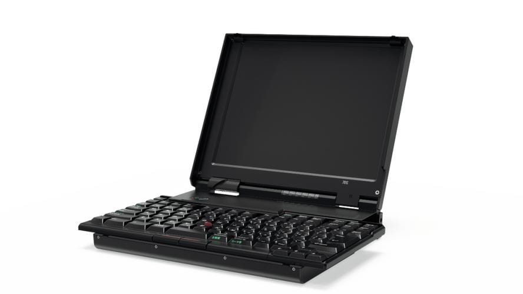

联想 ThinkPad 701C 蝴蝶机

滑盖展开全尺寸键盘，机械奇迹般的 90 年代笔记本。
客观评测
ThinkPad 701C 于 1995 年发布，搭载 486DX4-75MHz 处理器、8MB 内存与 540MB 机械硬盘，在当年属主流偏高端配置。其核心卖点是“蝴蝶键盘”：合盖时键盘折叠收纳，开盖后通过滑轨机构展开为全尺寸键盘，键距与手感远超同类小尺寸机型。10.4 英寸屏幕 640×480 分辨率，整机重约 2 公斤，是机械结构设计的教科书作品。
主观点评
每次打开 701C，看着键盘像蝴蝶展翅般滑开就位，都会起鸡皮疙瘩。那个年代的工程师宁愿增加机械复杂度，也要让用户打字舒服，这种价值观在今天几乎绝迹。它当然慢、当然重、当然耗电，但当灯光打在那副展开的键盘上时，你会明白为什么它被纽约现代艺术博物馆收藏。它不是工具，而是 ThinkPad 黄金时代的图腾。
优点与不足
- 蝶翼键盘展开机构巧夺天工，博物馆级设计
- 10.4 英寸机型中罕见的全尺寸键盘手感
- 收藏界公认的 ThinkPad 工业设计巅峰之一
- 486 级别性能早已无法使用
- 镍氢电池寿命短且如今难以配到
- DSTN 屏幕可视角度与响应都很差
参数规格
| 处理器 | 英特尔 486DX4-75MHz |
|---|---|
| 显卡 | Chips & Technologies CT65545，1MB 显存 |
| 内存 | 8MB EDO（最大可扩展至 40MB） |
| 存储 | 540MB 2.5 英寸机械硬盘 |
| 屏幕 | 10.4 英寸 DSTN/TFT，640×480 |
| 电池 | 镍氢电池组，约 2.5 小时 |
| 接口 | 串口、并口、PS/2、外接显示器口、红外 |
| 键盘 | 可折叠蝶翼式全尺寸键盘（TrackPoint） |
| 重量 | 约 2.0kg |
| 系统 | Windows 3.1 / Windows 95 |